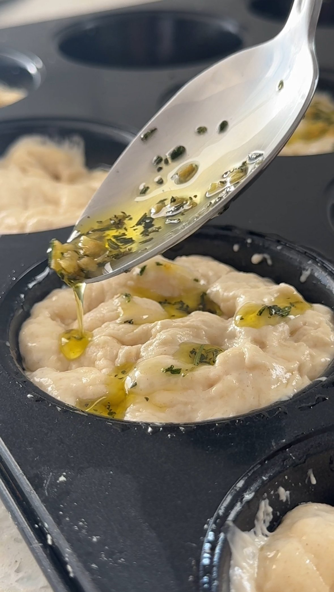
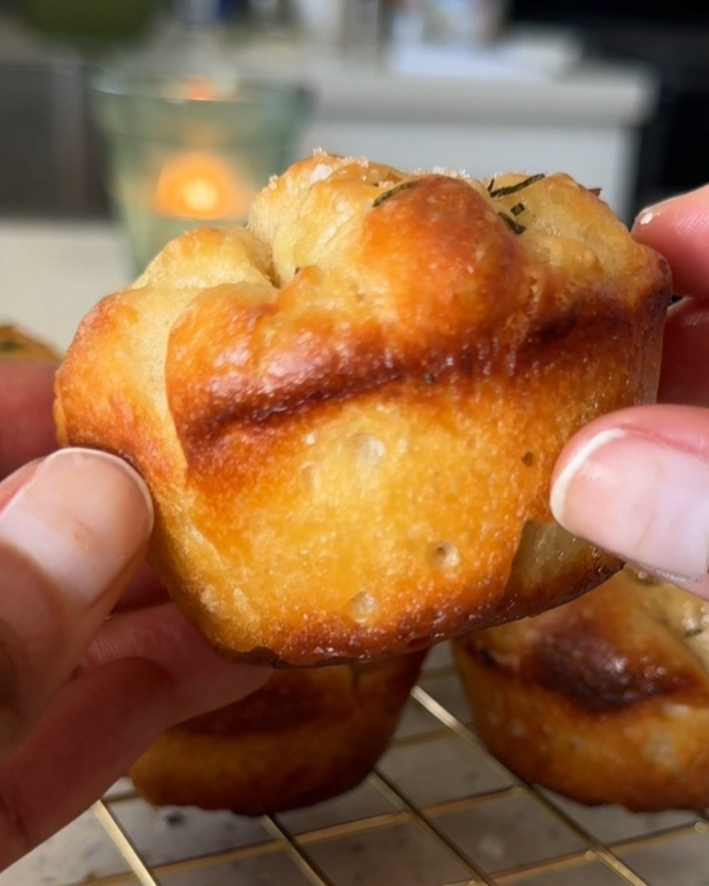

The full recipe for my rosemary garlic muffins are below–it’s super easy! But here’s the gist of it:
Day one:Mix the yeast, honey, and water together in a large bowl. Add the flour and salt to the bowl, and mix everything with a large spoon. Drizzle olive oil on top of the dough, and gently turn the dough in the oil so it’s coated. Cover the bowl with plastic wrap and chill in the fridge overnight.
Day two:Turn the dough out onto a lightly oiled counter. Divide the dough in half, and then cut six pieces from each half for a total of twelve dough strips. Divide the dough into the muffin tins, and allow the dough to rise.
Rosemary Garlic Topping: Meanwhile, heat olive oil in a small pan over medium heat. Add the minced rosemary and garlic. Remove the pan from the heat and gently swirl it around to quickly cook.
Focaccia Muffins, cont: Drizzle spoonfuls of the rosemary garlic topping evenly over the dough. Bake until the tops are lightly golden brown, and then brush the hot focaccia muffins with melted butter and sprinkle with the finishing salt.

FOCACCIA MUFFINS KEY INGREDIENTS
Active dry yeast
Honey
Gluten-free flour
Extra vergin olive oil
Rosemary
Garlic

HOW LONG DO THESE MINI FOCACCIAS TAKE TO MAKE?
Plan out two days to make these focaccia muffins. The reason why is because you will want to let the dough rise in the refrigerator overnight for at least 8 hours. And then, once you take it out of the fridge the dough will need to rise for another two hours on the counter at room temperature.
Like I said earlier, focaccia is easy to make because there’s very little hands-on time involved but you will need to wait a bit for the dough to rise. It’s very much worth the wait though!
If you’re absolutely pressed for time, you can let the dough rest on the counter for 4 hours instead of 8 hours in the fridge.